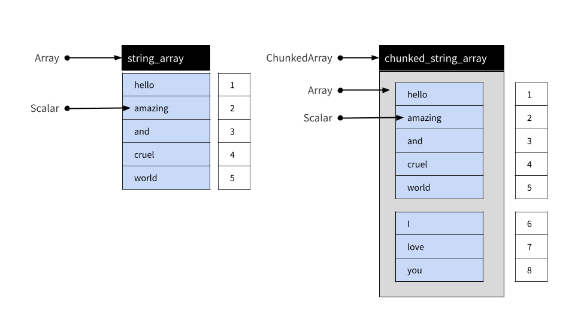

This article describes the various data object types supplied by
arrow, and documents how these objects are structured.
The arrow package supplies several object classes that
are used to represent data. RecordBatch,
Table, and Dataset objects are two-dimensional
rectangular data structures used to store tabular data. For columnar,
one-dimensional data, the Array and
ChunkedArray classes are provided. Finally,
Scalar objects represent individual values. The table below
summarizes these objects and shows how you can create new instances
using the R6 class
object, as well as convenience functions that provide the same
functionality in a more traditional R-like fashion:
| Dim | Class | How to create an instance | Convenience function |
|---|---|---|---|
| 0 | Scalar |
Scalar$create(value, type) |
|
| 1 | Array |
Array$create(vector, type) |
|
| 1 | ChunkedArray |
ChunkedArray$create(..., type) |
chunked_array(..., type) |
| 2 | RecordBatch |
RecordBatch$create(...) |
record_batch(...) |
| 2 | Table |
Table$create(...) |
arrow_table(...) |
| 2 | Dataset |
Dataset$create(sources, schema) |
open_dataset(sources, schema) |
Later in the article we’ll look at each of these in more detail.
For now we note that each of these object classes corresponds to a
class of the same name in the underlying Arrow C++ library. It is also
worth mentioning that the arrow package also defines
classes that do not exist in the C++ library including:
-
ArrowDatum: inherited byScalar,Array, andChunkedArray -
ArrowTabular: inherited byRecordBatchandTable -
ArrowObject: inherited by all Arrow objects
In addition to these data objects, arrow defines the
following classes for representing metadata:
- A
Schemais a list ofFieldobjects used to describe the structure of a tabular data object; where - A
Fieldspecifies a character string name and aDataType; and - A
DataTypeis an attribute controlling how values are represented
To learn more about the metadata classes, see the metadata article.
Scalars
A Scalar object is simply a single value that can be of any type. It
might be an integer, a string, a timestamp, or any of the different
DataType objects that Arrow supports. Most users of the
arrow R package are unlikely to create Scalars directly,
but should there be a need you can do this by calling the
Scalar$create() method:
Scalar$create("hello")## Scalar
## helloArrays
Array objects are ordered sets of Scalar values. As with Scalars most
users will not need to create Arrays directly, but if the need arises
there is an Array$create() method that allows you to create
new Arrays:
integer_array <- Array$create(c(1L, NA, 2L, 4L, 8L))
integer_array## Array
## <int32>
## [
## 1,
## null,
## 2,
## 4,
## 8
## ]
string_array <- Array$create(c("hello", "amazing", "and", "cruel", "world"))
string_array## Array
## <string>
## [
## "hello",
## "amazing",
## "and",
## "cruel",
## "world"
## ]An Array can be subset using square brackets as shown below:
string_array[4:5]## Array
## <string>
## [
## "cruel",
## "world"
## ]Arrays are immutable objects: once an Array has been created it cannot be modified or extended.
Chunked Arrays
In practice, most users of the arrow R package are
likely to use Chunked Arrays rather than simple Arrays. Under the hood,
a Chunked Array is a collection of one or more Arrays that can be
indexed as if they were a single Array. The reasons that Arrow
provides this functionality are described in the data object layout
article but for the present purposes it is sufficient to notice that
Chunked Arrays behave like Arrays in regular data analysis.
To illustrate, let’s use the chunked_array()
function:
chunked_string_array <- chunked_array(
string_array,
c("I", "love", "you")
)The chunked_array() function is just a wrapper around
the functionality that ChunkedArray$create() provides.
Let’s print the object:
chunked_string_array## ChunkedArray
## <string>
## [
## [
## "hello",
## "amazing",
## "and",
## "cruel",
## "world"
## ],
## [
## "I",
## "love",
## "you"
## ]
## ]The double bracketing in this output is intended to highlight the fact that Chunked Arrays are wrappers around one or more Arrays. However, although comprised of multiple distinct Arrays, a Chunked Array can be indexed as if they were laid end-to-end in a single “vector-like” object. This is illustrated below:

We can use chunked_string_array to illustrate this:
chunked_string_array[4:7]## ChunkedArray
## <string>
## [
## [
## "cruel",
## "world"
## ],
## [
## "I",
## "love"
## ]
## ]An important thing to note is that “chunking” is not semantically
meaningful. It is an implementation detail only: users should never
treat the chunk as a meaningful unit. Writing the data to disk, for
example, often results in the data being organized into different
chunks. Similarly, two Chunked Arrays that contain the same values
assigned to different chunks are deemed equivalent. To illustrate this
we can create a Chunked Array that contains the same four same four
values as chunked_string_array[4:7], but organized into one
chunk rather than split into two:
cruel_world <- chunked_array(c("cruel", "world", "I", "love"))
cruel_world## ChunkedArray
## <string>
## [
## [
## "cruel",
## "world",
## "I",
## "love"
## ]
## ]Testing for equality using == produces an element-wise
comparison, and the result is a new Chunked Array of four (boolean type)
true values:
cruel_world == chunked_string_array[4:7]## ChunkedArray
## <bool>
## [
## [
## true,
## true,
## true,
## true
## ]
## ]In short, the intention is that users interact with Chunked Arrays as if they are ordinary one-dimensional data structures without ever having to think much about the underlying chunking arrangement.
Chunked Arrays are mutable, in a specific sense: Arrays can be added and removed from a Chunked Array.
Record Batches
A Record Batch is tabular data structure comprised of named Arrays. Record Batches are a fundamental unit for data interchange in Arrow, but are not typically used for data analysis. Tables and Datasets are usually more convenient in analytic contexts.
These Arrays can be of different types but must all be the same
length. Each Array is referred to as one of the “fields” or “columns” of
the Record Batch. You can create a Record Batch using the
record_batch() function or by using the
RecordBatch$create() method. These functions are flexible
and can accept inputs in several formats: you can pass a data frame, one
or more named vectors, an input stream, or even a raw vector containing
appropriate binary data. For example:
rb <- record_batch(
strs = string_array,
ints = integer_array,
dbls = c(1.1, 3.2, 0.2, NA, 11)
)
rb## RecordBatch
## 5 rows x 3 columns
## $strs <string>
## $ints <int32>
## $dbls <double>This is a Record Batch containing 5 rows and 3 columns, and its conceptual structure is shown below:

The arrow package supplies a $ method for
Record Batch objects, used to extract a single column by name:
rb$strs## Array
## <string>
## [
## "hello",
## "amazing",
## "and",
## "cruel",
## "world"
## ]You can use double brackets [[ to refer to columns by
position. The rb$ints array is the second column in our
Record Batch so we can extract it with this:
rb[[2]]## Array
## <int32>
## [
## 1,
## null,
## 2,
## 4,
## 8
## ]There is also [ method that allows you to extract
subsets of a record batch in the same way you would for a data frame.
The command rb[1:3, 1:2] extracts the first three rows and
the first two columns:
rb[1:3, 1:2]## RecordBatch
## 3 rows x 2 columns
## $strs <string>
## $ints <int32>Record Batches cannot be concatenated: because they are comprised of Arrays, and Arrays are immutable objects, new rows cannot be added to Record Batch once created.
Tables
A Table is comprised of named Chunked Arrays, in the same way that a
Record Batch is comprised of named Arrays. You can subset Tables with
$, [[, and [ the same way you can
for Record Batches. Unlike Record Batches, Tables can be concatenated
(because they are comprised of Chunked Arrays). Suppose a second Record
Batch arrives:
new_rb <- record_batch(
strs = c("I", "love", "you"),
ints = c(5L, 0L, 0L),
dbls = c(7.1, -0.1, 2)
)It is not possible to create a Record Batch that appends the data
from new_rb to the data in rb, not without
creating entirely new objects in memory. With Tables, however, we
can:
df <- arrow_table(rb)
new_df <- arrow_table(new_rb)We now have the two fragments of the data set represented as Tables. The difference between the Table and the Record Batch is that the columns are all represented as Chunked Arrays. Each Array from the original Record Batch is one chunk in the corresponding Chunked Array in the Table:
rb$strs## Array
## <string>
## [
## "hello",
## "amazing",
## "and",
## "cruel",
## "world"
## ]
df$strs## ChunkedArray
## <string>
## [
## [
## "hello",
## "amazing",
## "and",
## "cruel",
## "world"
## ]
## ]It’s the same underlying data – and indeed the same immutable Array is referenced by both – just enclosed by a new, flexible Chunked Array wrapper. However, it is this wrapper that allows us to concatenate Tables:
concat_tables(df, new_df)## Table
## 8 rows x 3 columns
## $strs <string>
## $ints <int32>
## $dbls <double>The resulting object is shown schematically below:

Further reading
- To learn more about the internal structure of Arrays, see the article on data object layout.
- To learn more about the different data types that can be represented in Arrow, see the article on data types.
- To learn more about how Arrow objects are implemented, see the Arrow specification page.